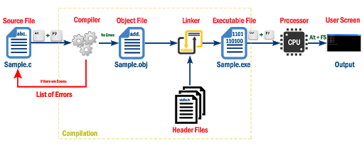
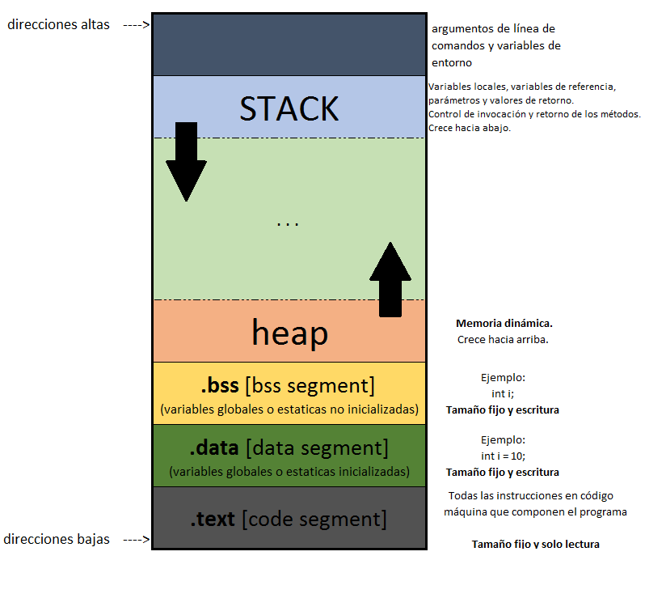
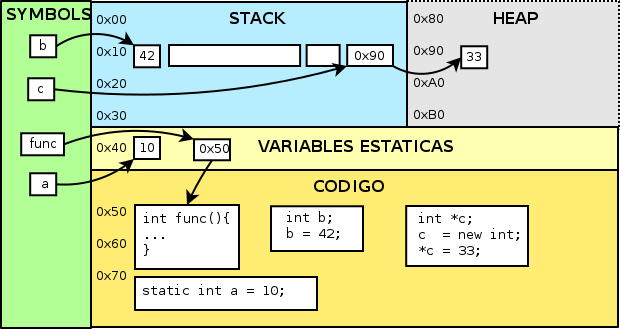
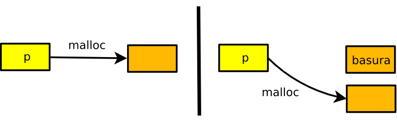
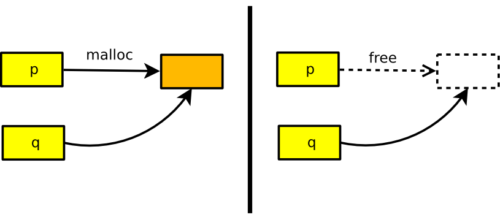

ELO320 - Estructuras de Datos y Algoritmos
Marie González-Inostroza


Segmentos de memoria
Donde el programa compilado se mantiene en memoria.
Mantiene variables globales y estáticas.
Ligado estático: variables (y valores) en la memoria hasta que el programa termina.
Permite al programador crear y eliminar objetos de memoria dinámicamente.
Son referenciados indirectamente mediante punteros y/o referencias.
Área dinámica de memoria donde se guardan las variables locales y la información de las funciones.
Los objetos se asignan/liberan automáticamente en tiempo de ejecución.
Manejado automáticamente por el compilador.
long int y; // var global
static int z = 1; // global estatica;
// solo visible a este archivo.
int est3_st4tic(){
static int a=0; // local estatica
a++; // no pierde su valor al finalizar ámbito
return a;
}
int fun() {
int i;
for(i=0;i<10;i++){
printf("vuelta numero %d\n", i);
printf("pero no pierde su valor: %d\n", est3_st4tic());
}
return 0;
}

#include<stdio.h>
int main(){
int b;
scanf("%d", &b); // ¿Por qué &b?
return 0;
}
El operador & nos entrega la ubicación de memoria donde se encuentra el cajón.
En parejas, corran el código y observen las salidas. Comenten las preguntas guía.
El código base está en Classroom: https://classroom.github.com/a/ow8h-cPQ
Se definen con el modificador *, e indicando su tipo.
int utfsm1 = 1680;
int utfsm2 = 3939;
int *dir = NULL; // puntero a int
dir = &utfsm1;
printf("Dirección dentro de dir: %p\n", dir);
printf("Valor dir: %d\n", *dir);
printf("Dirección de dir: %p\n", &dir);
Diremos que un puntero apunta a la dirección de memoria que almacena.
Un puntero puede inicializarse a NULL, indicando que no apunta a ninguna dirección válida.
int *ptr = NULL; //Inicializado como puntero nulo:
double *d = NULL;
Es una buena práctica inicializar punteros a NULL para evitar errores de acceso a memoria.
Acceder al valor al que apunta un puntero usando el operador *.
int utfsm1 = 1680; //Dos variables de tipo int.
int utfsm2 = 3939;
int *dir = NULL;
dir = &utfsm1; //Puntero a un int, apunta a donde está utfsm1
printf("Dirección dentro de dir: |\%|p\n", dir);
printf("Valor dir: |\%|d\n", *dir);
printf("Dirección de dir: |\%|p\n", &dir);
El operador * nos permite acceder al valor almacenado en la dirección a la que apunta el puntero.
float num = 2.5;
float *f;
f = # //Dirección a num.
printf("Direccion f: %p\n", f); //¿Cuál es la diferencia
printf("Direccion f+1: %p\n", f+1); //entre f y f+1?
int a[10], i;
int *pa, *pb;
pa = &a[0]; /* dir. elemento 0 de arreglo a */
pa = a; /* lo mismo con coerción */
pb = &a; /* dir. de arreglo a. tamaño 10 int */
for (i=0; i<10; i++){
printf("%d ", a[i]);
printf("%d ", *(pa+i));
printf("%d ", *(a+i));
}
printf("%d ", *(pb+1)); //¿Qué pasa acá?
Completa el código base.
El código base está en Classroom: https://classroom.github.com/a/KpBXhD5K
Controlada por el programador y almacenada en el heap de la memoria.
Permite:
stdlib.h:malloc(): reserva de memoria.realloc(): reasignación de memoria.free(): liberación de memoria.valgrind: software para debugging de memoria.sizeof como base del tamaño.
#include<stdio.h>
#include<stdlib.h>
int main(int argc, char **argv){
int *arreglo=NULL;
// sizeof(tipo_de_dato) o sizeof(expresion)
arreglo = malloc(10 * sizeof(*arreglo));
// arreglo = malloc(10 * sizeof(int));
// arreglo = malloc(10 * sizeof *arreglo);
// arreglo = (int *) malloc(10 * sizeof(int)); //cast opcional en C
return 0;
}
calloc() reserva memoria y la inicializa en cero.
#include <stdio.h>
#include <stdlib.h>
int main() {
int *arreglo;
// calloc reserva 5 ints e inicializa todos en 0
arreglo = (int *) calloc(5, sizeof(int));
for(int i = 0; i < 5; i++)
printf("%d ", arreglo[i]); // imprime: 0 0 0 0 0
free(arreglo);
return 0;
}
#include<stdio.h>
#include<stdlib.h>
int main(int argc, char **argv){
int *arreglo=NULL;
arreglo = malloc(10 * sizeof(*arreglo));
arreglo = realloc(arreglo, 5 * sizeof(int));
arreglo = realloc(arreglo, 20 * sizeof *arreglo);
return 0;
}
#include<stdio.h>
#include<stdlib.h>
int main(int argc, char **argv){
int *arreglo=NULL;
arreglo = malloc(10 * sizeof(*arreglo));
arreglo = realloc(arreglo, 5 * sizeof(int));
arreglo = realloc(arreglo, 20 * sizeof *arreglo);
free(arreglo);
return 0;
}
int main(int argc, char **argv){
int *p;
p = malloc(sizeof(int));
p = malloc(sizeof(int)); // fuga, se pierde la dirección anterior
free(p);
return 0;
}
int main(int argc, char **argv){
int x=2;
int *p, *q;
p = malloc(sizeof(int));
q = p;
free(p); /* q aun mantiene referencia al heap */
*q = x; // error
return 0;
}


#include<stdio.h>
#include<stdlib.h>
int main(int argc, char **argv){
int *arreglo=NULL, i;
arreglo = malloc(10 * sizeof *arreglo);
if(arreglo==NULL){
printf("Error al reservar memoria...\n");
return -1;
}
for(i=0;i<5;i++){
arreglo[i]=i+1;
}
arreglo = realloc(arreglo, 5 * sizeof(int));
for(i=0;i<5;i++){
printf("%d ", arreglo[i]);
}
free(arreglo);
return 0;
}
Completa el código para modificar el tamaño de un arreglo de ints y eliminar un elemento.
El código base está en Classroom: https://classroom.github.com/a/TTF95M2o
struct permite agrupar variables bajo un mismo nombre.. (para variables) o ->
(para punteros).
#include <stdio.h>
struct Estudiante {
char nombre[50];
char apellido[50];
float nota;};
int main() {
struct Estudiante e1;
strcpy(e1.nombre, "Maria");
strcpy(e1.apellido, "Gonzalez");
e1.nota = 7.0;
printf("%s %s - %.2f\n", e1.nombre, e1.apellido, e1.nota);
return 0;
}
Con typedef creamos un alias y evitamos escribir struct al declarar variables.
#include <stdio.h>
#include <string.h>
typedef struct {
char nombre[50];
char apellido[50];
float nota;
} Estudiante;
int main() {
Estudiante e1; // no necesitamos escribir 'struct'
strcpy(e1.nombre, "Pedro");
strcpy(e1.apellido, "Perez");
e1.nota = 8.5;
printf("%s %s - %.2f\n", e1.nombre, e1.apellido, e1.nota);
return 0;
}
Estudiante *ptr = malloc(sizeof(Estudiante));
strcpy(ptr->nombre, "Ana");
ptr->nota = 9.0;
printf("%s - %.2f\n", ptr->nombre, ptr->nota);
free(ptr);
Con typedef, el uso de punteros es más legible y no necesitamos escribir struct.
typedef struct {
char nombre[50];
char apellido[50];
float nota;
} Estudiante;
void modificar_por_valor(Estudiante e) {
e.nota = 7.0; // solo copia
}
void modificar_por_referencia(Estudiante *e) {
e->nota = 7.0; // modifica original
}
Completa el código base.
El código base está en Classroom: https://classroom.github.com/a/r9knwaUC